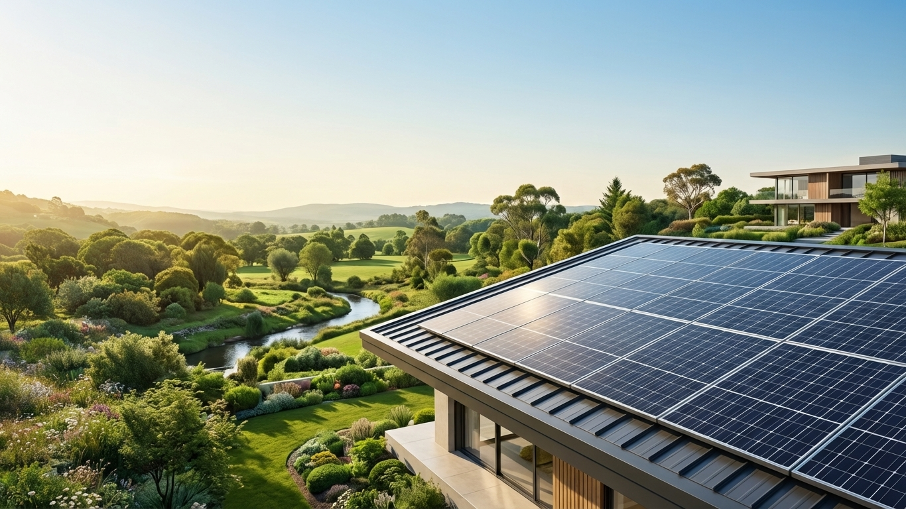

É a eletricidade gerada a partir da luz do sol através de células fotovoltaicas presentes nos painéis solares. Quando a luz incide sobre essas células, cria um fluxo de eletrões que produz energia limpa e renovável.
A energia fotovoltaica converte a luz solar diretamente em eletricidade para alimentar eletrodomésticos e lâmpadas. A energia térmica utiliza o calor do sol apenas para aquecer água (como nos banhos e piscinas).
Sim. Embora a produção diminua devido à menor incidência direta de radiação, os painéis continuam a gerar energia através da radiação difusa presente na atmosfera.
À noite o sistema entra em repouso. O teu imóvel passa a consumir automaticamente a energia fornecida pela rede elétrica tradicional (ou de baterias, caso tenhas um sistema com armazenamento).
O sistema On-Grid funciona ligado à rede elétrica pública (permitindo gerar créditos de energia). O sistema Off-Grid é totalmente isolado e armazena a energia excedente em baterias para uso posterior.
A grande maioria dos telhados pode receber a instalação, desde que a estrutura de suporte esteja em bom estado e o local não tenha sombreamento excessivo. Fazemos uma avaliação técnica prévia para garantir a viabilidade.
Para a maioria dos projetos residenciais, a instalação dos painéis e do inversor demora entre 1 e 3 dias úteis.
Sim. Todo o sistema ligado à rede precisa de ser homologado junto da distribuidora de energia local. A equipa da Solar Control trata de todo este processo burocrático por ti.
Em sistemas On-Grid normais, o inversor desliga-se automaticamente por motivos de segurança (sistema anti-ilhamento), evitando eletrocutar os técnicos que trabalham na manutenção da rede pública.
É possível reduzir até 95% do valor da tua fatura de energia, ficando responsável apenas pelo pagamento das taxas mínimas de disponibilidade e impostos obrigatórios da rede.
O retorno financeiro ocorre geralmente entre 3 e 6 anos, dependendo do valor da tarifa local e do consumo do imóvel.
Quando o teu sistema produz mais energia do que aquela que consomes durante o dia, o excesso é injetado na rede elétrica e transformado em créditos que podes abater no consumo noturno ou em meses futuros.
Sim, desde que o outro imóvel esteja registado sob o mesmo titular (CPF/CNPJ) e dentro da área de cobertura da mesma distribuidora de energia.
Sim. Estudos do setor imobiliário indicam que imóveis com produção própria de energia limpa valorizam em média entre 10% e 15% no mercado.
Os painéis solares têm uma vida útil superior a 25 a 30 anos, mantendo mais de 80% da sua eficiência de geração original ao fim desse período.
A manutenção é simples e reduzida. Consiste maioritariamente na limpeza periódica das placas com água (duas vezes por ano ou conforme a acumulação de poeiras/folhas) e numa inspeção elétrica anual.
Os painéis solares contam com garantia de eficiência de 25 anos. Os inversores possuem garantia de fabrico que varia entre 5 e 10 anos (com possibilidade de extensão).
Os painéis solares são fabricados com vidro temperado de alta resistência, projetados e testados para suportar tempestades, ventos fortes e impactos de granizo severos.